zone-first v2 - the user's layout beside the generated top 3, with the blind-test result
Quality ranking (provisional): the score is built from the band of each metric across the user's own plans (the brief's own plan left out). One-sided metrics (Flex share, circulation share, spine length over depth, longest Flex piece over depth): only the amount above the band's max counts, and 0.1 per percentage point rewards less. Two-sided metrics (Core share, bedroom spread): 1 per point outside the band plus 0.1 per point from its middle. +10 if no wet room is near a bedroom, +10 if the laundry is not near the wet rooms or the Core, +10 per Flex strip, +50 per sliver. Lower is better. The user's layouts never steer generation or ranking; closeness is a diagnostic. Every zone carries its name and size (metres, 1 dp); Flex is hatched with its class, an extension is hatched the other way and labelled "Zone · extension", flex-walls are hatched with a dashed edge, the spine is dotted - nothing relies on colour.
zf-00 - theatre reference 12500 x 24000 mm, 4 bed, double garage
valid 3200/5504 generated · 2894 distinct · 1447 mirror images hidden · top 5 pairwise different: yes (largest same-kind overlap 0.51) no layout of the user's for this brief: ranked against the profile of all six plans regression target: matched, rank 2223 of 2894
builder planuser's zoning drawingtop 1 (rank 1 of 2894) L|midR|split|m:rear/block|wet:split|rr:BBFM|nofw|v2 score 17.03 · Flex share 35% · circulation 5% · Core 19% · bedroom spread 12.6 m · wet near bed yes · laundry near yes · spine 6.0 m · extensions 0.0 m² · flex m²: room 79.2 · circulation 8.7 · storage 17.7 · sliver 0.0
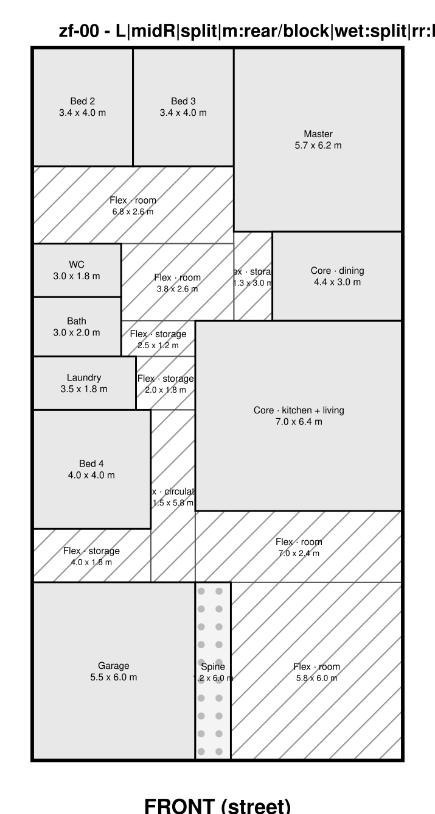
top 2 (rank 3 of 2894) L|midR|block|m:front/block|wet:split|rr:BBF|fw|v0 score 17.8 · Flex share 31% · circulation 5% · Core 19% · bedroom spread 10.6 m · wet near bed yes · laundry near yes · spine 6.0 m · extensions 0.0 m² · flex m²: room 86.8 · circulation 0.0 · storage 5.9 · sliver 0.0
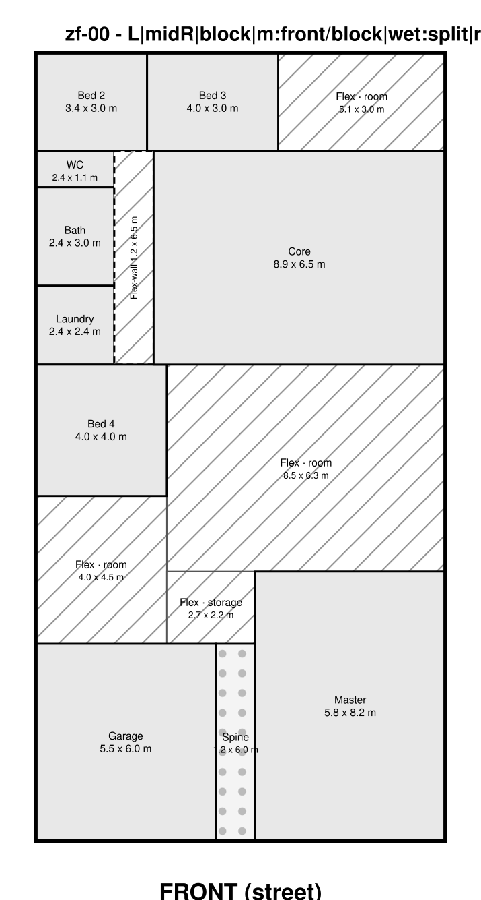
top 3 (rank 5 of 2894) L|midR|split|m:middle/block|wet:block|rr:FBFB|nofw|v0 score 17.84 · Flex share 36% · circulation 5% · Core 19% · bedroom spread 11.5 m · wet near bed yes · laundry near yes · spine 6.0 m · extensions 0.0 m² · flex m²: room 86.3 · circulation 7.2 · storage 15.5 · sliver 0.0
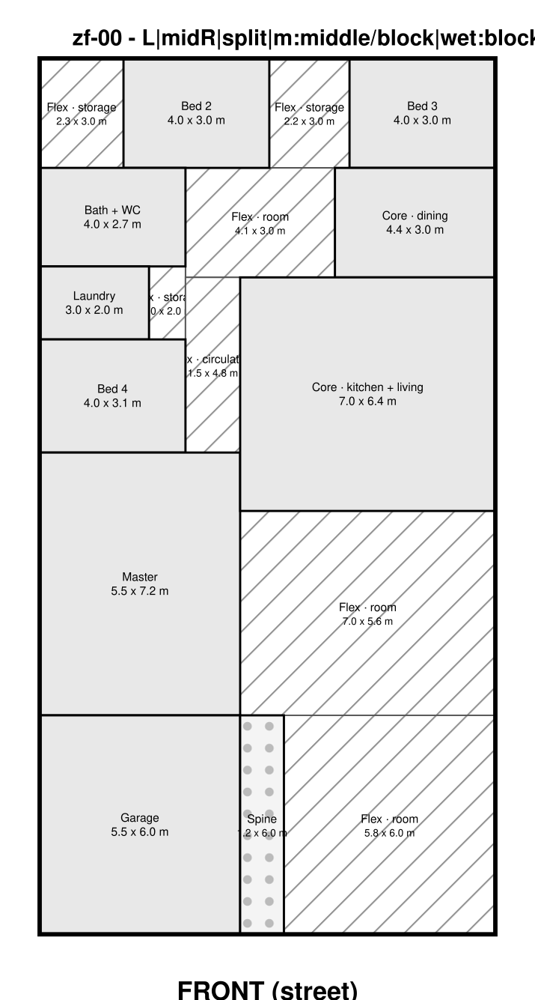
top 4, top 5 and the regression target match
top 4 (rank 71 of 2894) L|midG|split|m:front/block|wet:block|rr:FBB|fw|v2 score 22.43 · Flex share 35% · circulation 10% · Core 19% · bedroom spread 10.7 m · wet near bed yes · laundry near yes · spine 6.0 m · extensions 0.0 m² · flex m²: room 84.5 · circulation 10.8 · storage 8.8 · sliver 0.0
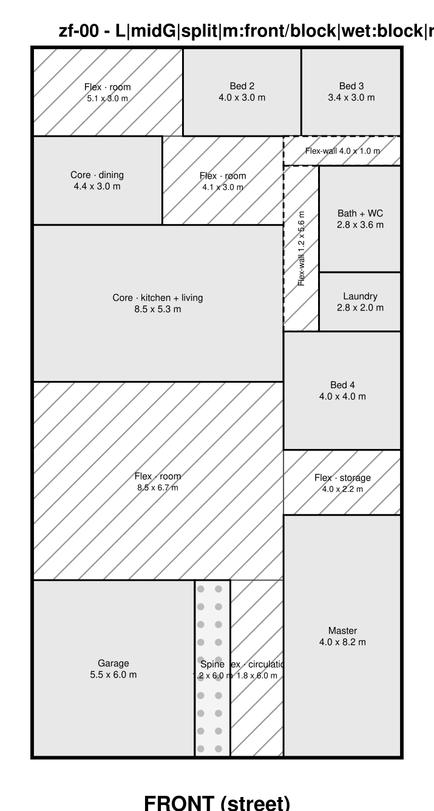
top 5 (rank 85 of 2894) L|midG|split|m:rear/block|wet:block|rr:MFBB|nofw|v2 score 23.14 · Flex share 35% · circulation 6% · Core 19% · bedroom spread 12.1 m · wet near bed yes · laundry near yes · spine 6.0 m · extensions 0.0 m² · flex m²: room 82.7 · circulation 10.8 · storage 12.1 · sliver 0.0
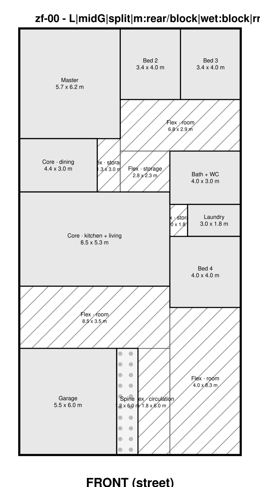
target match (regression) (rank 2223 of 2894) TARGET MATCH R|rear|block|m:middle/block|wet:block|rr:-|fw|v3 score 79.01 · Flex share 30% · circulation 14% · Core 27% · bedroom spread 6.0 m · wet near bed yes · laundry near yes · spine 6.0 m · extensions 22.8 m² · flex m²: room 57.1 · circulation 31.5 · storage 0.0 · sliver 0.0
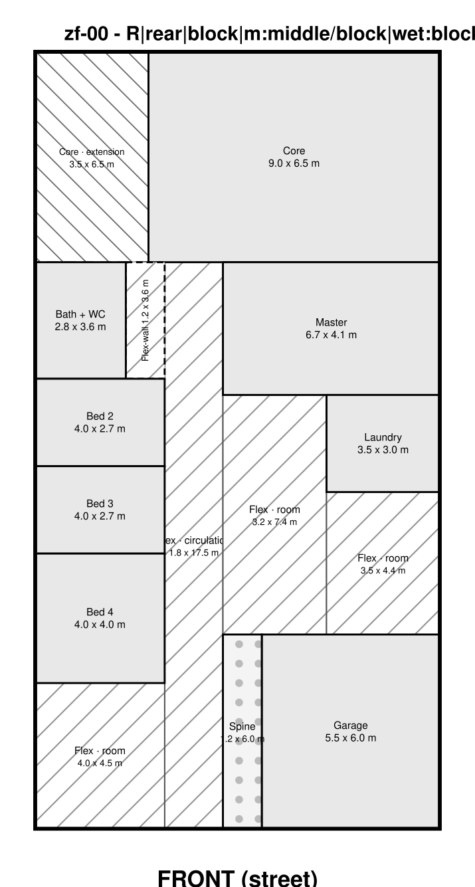
zf-01 - 2-bed 9.0 x 16.9 9000 x 16900 mm, 2 bed, single garage
valid 354/1472 generated · 242 distinct · 121 mirror images hidden · top 5 pairwise different: yes (largest same-kind overlap 0.69) blind test PASSED: best score in the top 5 15.01 vs the user's layout 42.65 (first candidate at least as good: rank 1); the user's layout: Flex 6%, circulation 15%, Core 33%; top 1 Flex 20%; closeness top 1 11%, best of all 75% regression target: matched, rank 30 of 242
top 1 (rank 1 of 242) L|midW|block|m:rear/split|wet:split|rr:FM|fw|v2 score 15.01 · Flex share 20% · circulation 13% · Core 24% · bedroom spread 0.0 m · wet near bed yes · laundry near yes · closeness to the user's layout 11% · spine 6.0 m · extensions 0.0 m² · flex m²: room 26.3 · circulation 2.7 · storage 2.2 · sliver 0.0
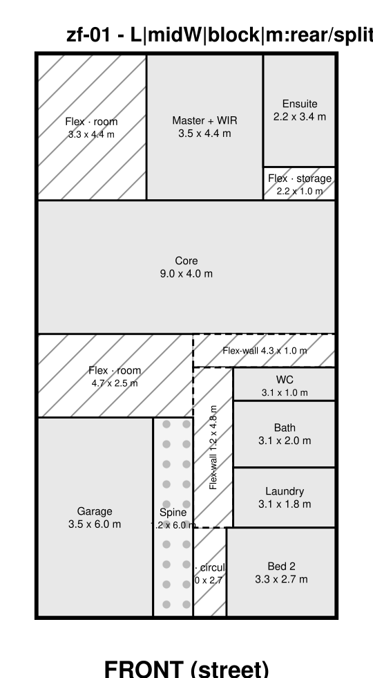
top 2 (rank 10 of 242) L|midW|block|m:rear/block|wet:block|rr:MF|fw|v0 score 15.31 · Flex share 25% · circulation 13% · Core 24% · bedroom spread 0.0 m · wet near bed yes · laundry near yes · closeness to the user's layout 8% · spine 6.0 m · extensions 0.0 m² · flex m²: room 22.5 · circulation 6.1 · storage 8.9 · sliver 0.0
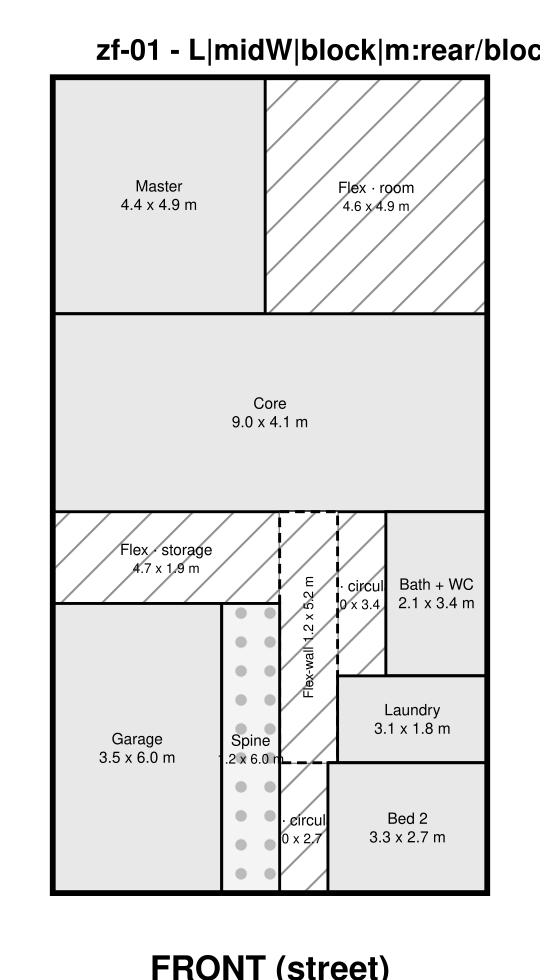
top 3 (rank 13 of 242) L|midR|block|m:rear/split|wet:block|rr:FM|nofw|v0 score 16.23 · Flex share 28% · circulation 5% · Core 24% · bedroom spread 0.0 m · wet near bed yes · laundry near yes · closeness to the user's layout 10% · spine 6.0 m · extensions 0.0 m² · flex m²: room 40.3 · circulation 0.0 · storage 2.2 · sliver 0.0
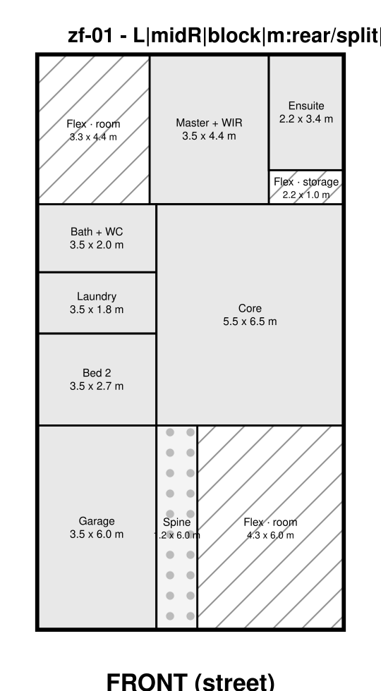
top 4, top 5 and the regression target match
top 4 (rank 29 of 242) L|rear|block|m:front/block|wet:block|rr:-|nofw|v2 score 18.92 · Flex share 23% · circulation 8% · Core 27% · bedroom spread 0.0 m · wet near bed yes · laundry near yes · closeness to the user's layout 34% · spine 6.0 m · extensions 0.0 m² · flex m²: room 30.1 · circulation 4.5 · storage 0.0 · sliver 0.0
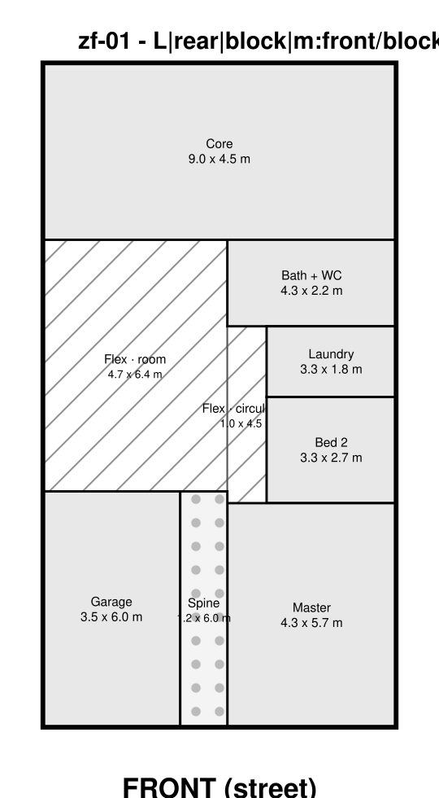
top 5 (rank 31 of 242) L|midG|block|m:rear/split|wet:split|rr:FM|fw|v3 score 20.36 · Flex share 26% · circulation 13% · Core 19% · bedroom spread 0.0 m · wet near bed yes · laundry near yes · closeness to the user's layout 8% · spine 6.0 m · extensions 0.0 m² · flex m²: room 26.1 · circulation 5.8 · storage 8.0 · sliver 0.0
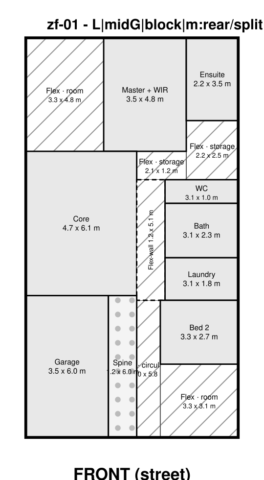
target match (regression) (rank 30 of 242) TARGET MATCH R|rear|block|m:front/block|wet:block|rr:-|nofw|v2 score 18.92 · Flex share 23% · circulation 8% · Core 27% · bedroom spread 0.0 m · wet near bed yes · laundry near yes · closeness to the user's layout 67% · spine 6.0 m · extensions 0.0 m² · flex m²: room 30.1 · circulation 4.5 · storage 0.0 · sliver 0.0
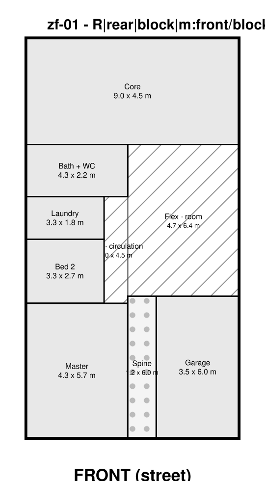
zf-03 - Turquoise Bay 9890 x 24790 mm, 4 bed, double garage
valid 964/5504 generated · 740 distinct · 370 mirror images hidden · top 5 pairwise different: yes (largest same-kind overlap 0.69) blind test NOT passed: best score in the top 5 8.76 vs the user's layout 8.14 (first candidate at least as good: rank none); the user's layout: Flex 13%, circulation 5%, Core 27%; top 1 Flex 29%; closeness top 1 33%, best of all 70% regression target: matched, rank 257 of 740
top 1 (rank 1 of 740) L|midR|block|m:middle/block|wet:block|rr:FBB|nofw|v0 score 8.76 · Flex share 29% · circulation 3% · Core 22% · bedroom spread 10.3 m · wet near bed yes · laundry near yes · closeness to the user's layout 33% · spine 6.0 m · extensions 0.0 m² · flex m²: room 68.4 · circulation 0.0 · storage 2.1 · sliver 0.0
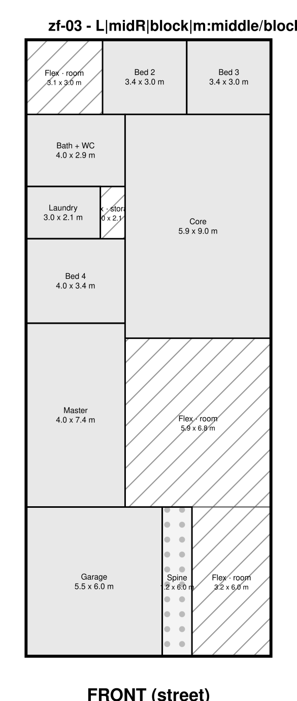
top 2 (rank 9 of 740) L|midR|split|m:middle/block|wet:split|rr:BBF|fw|v3 score 9.3 · Flex share 27% · circulation 13% · Core 21% · bedroom spread 10.5 m · wet near bed yes · laundry near yes · closeness to the user's layout 27% · spine 6.0 m · extensions 0.0 m² · flex m²: room 45.2 · circulation 18.0 · storage 4.0 · sliver 0.0
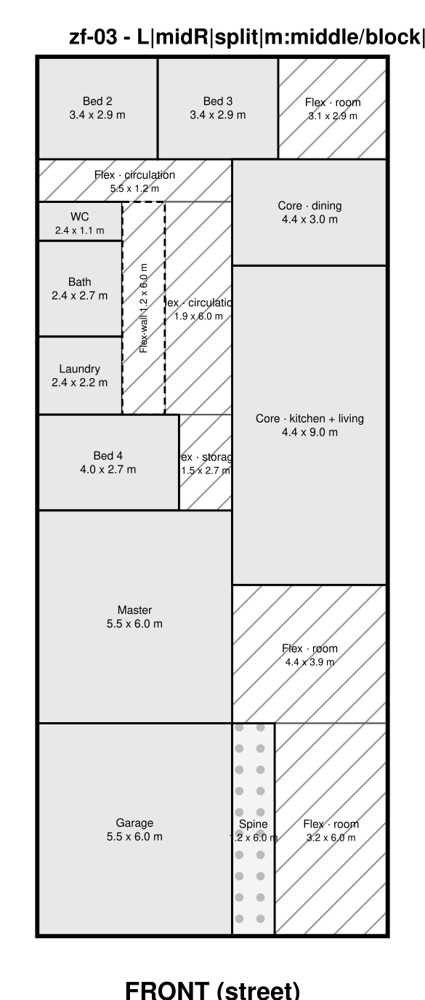
top 3 (rank 19 of 740) L|midG|split|m:rear/split|wet:split|rr:FM|fw|v0 score 13.28 · Flex share 24% · circulation 6% · Core 23% · bedroom spread 7.4 m · wet near bed yes · laundry near yes · closeness to the user's layout 56% · spine 6.0 m · extensions 0.0 m² · flex m²: room 47.4 · circulation 0.0 · storage 12.2 · sliver 0.0
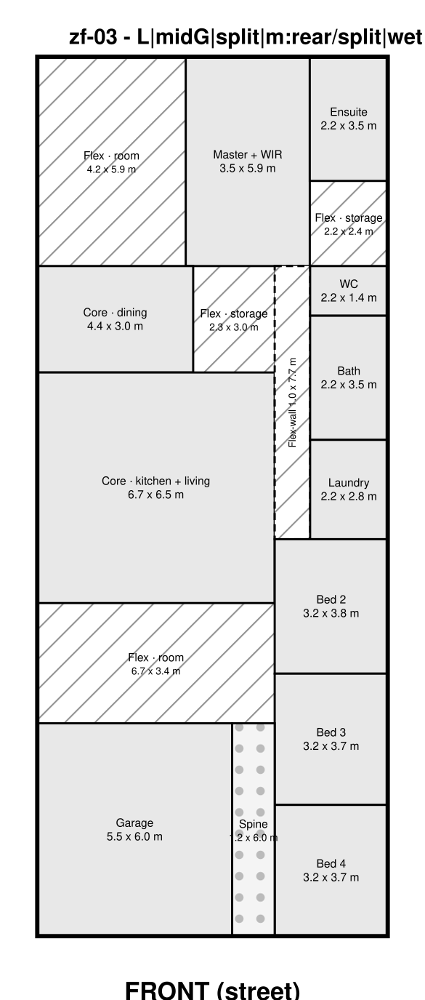
top 4, top 5 and the regression target match
top 4 (rank 48 of 740) L|midG|block|m:rear/block|wet:split|rr:MF|fw|v0 score 14.75 · Flex share 29% · circulation 6% · Core 18% · bedroom spread 7.3 m · wet near bed yes · laundry near yes · closeness to the user's layout 45% · spine 6.0 m · extensions 0.0 m² · flex m²: room 70.5 · circulation 0.0 · storage 0.0 · sliver 0.0
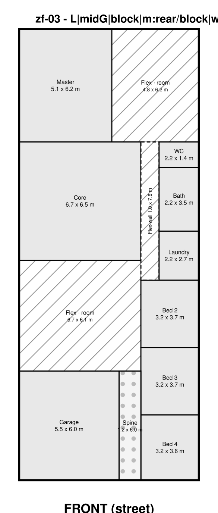
top 5 (rank 131 of 740) L|rear|block|m:middle/block|wet:split|rr:-|fw|v2 score 17.8 · Flex share 22% · circulation 6% · Core 26% · bedroom spread 7.2 m · wet near bed yes · laundry near yes · closeness to the user's layout 33% · spine 6.0 m · extensions 6.5 m² · flex m²: room 54.9 · circulation 0.0 · storage 0.0 · sliver 0.0
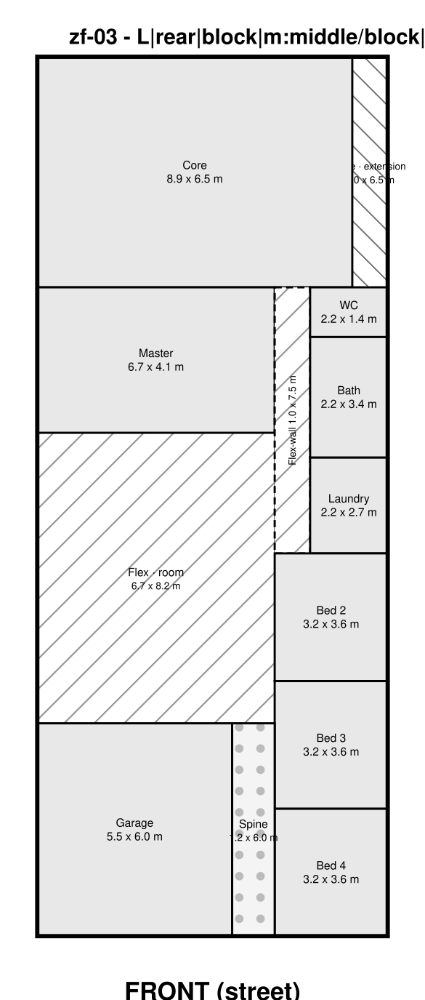
target match (regression) (rank 257 of 740) TARGET MATCH L|midW|split|m:rear/block|wet:block|rr:FM|fw|v0 score 22.88 · Flex share 29% · circulation 5% · Core 26% · bedroom spread 5.4 m · wet near bed yes · laundry near yes · closeness to the user's layout 67% · spine 6.0 m · extensions 17.2 m² · flex m²: room 71.0 · circulation 0.0 · storage 0.0 · sliver 0.0
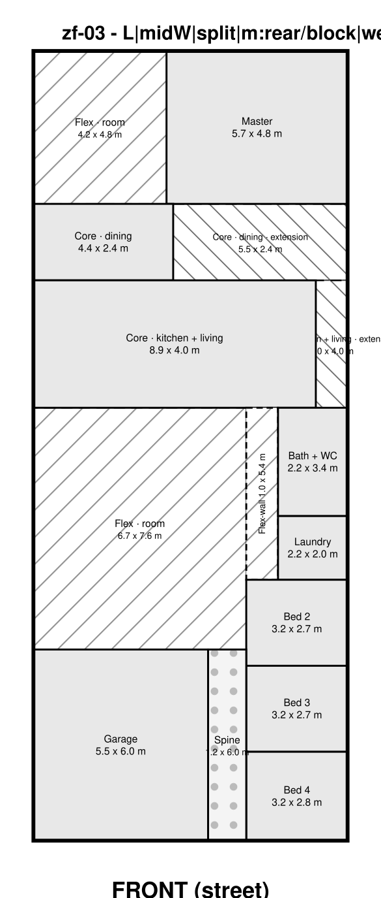
zf-04 - Torquay Beach 12490 x 24190 mm, 4 bed, double garage
valid 3184/5504 generated · 2884 distinct · 1442 mirror images hidden · top 5 pairwise different: yes (largest same-kind overlap 0.59) blind test PASSED: best score in the top 5 24.9 vs the user's layout 25.01 (first candidate at least as good: rank 1); the user's layout: Flex 29%, circulation 6%, Core 18%; top 1 Flex 31%; closeness top 1 67%, best of all 72% regression target: matched, rank 1 of 2884
top 1 (rank 1 of 2884) TARGET MATCH L|midR|block|m:front/block|wet:split|rr:BBF|fw|v0 score 24.9 · Flex share 31% · circulation 5% · Core 19% · bedroom spread 10.6 m · wet near bed yes · laundry near yes · closeness to the user's layout 67% · spine 6.0 m · extensions 0.0 m² · flex m²: room 89.2 · circulation 0.0 · storage 5.9 · sliver 0.0
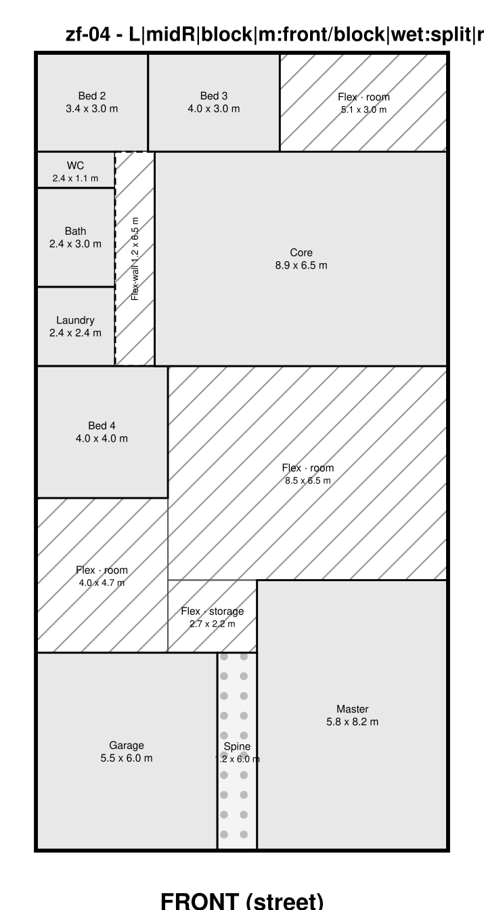
top 2 (rank 3 of 2884) L|midR|split|m:middle/block|wet:block|rr:BBF|fw|v0 score 25.8 · Flex share 38% · circulation 5% · Core 19% · bedroom spread 9.7 m · wet near bed yes · laundry near yes · closeness to the user's layout 55% · spine 6.0 m · extensions 0.0 m² · flex m²: room 104.2 · circulation 0.0 · storage 10.3 · sliver 0.0
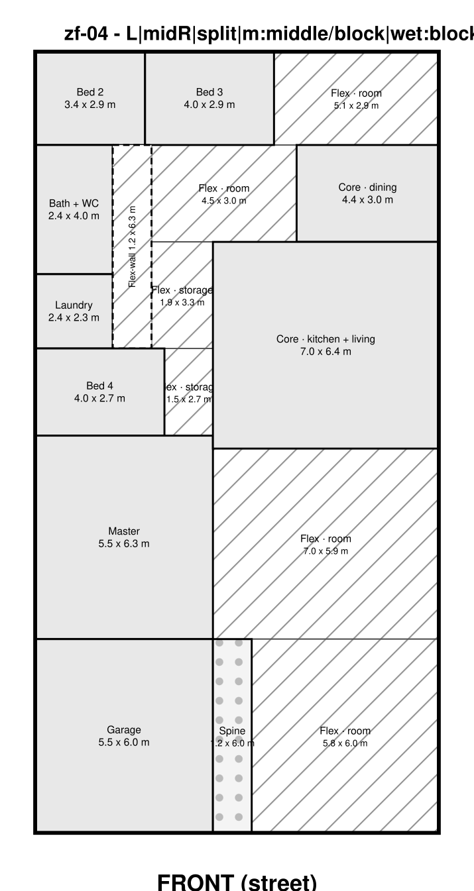
top 3 (rank 25 of 2884) L|midG|split|m:front/block|wet:block|rr:FBB|fw|v2 score 29.35 · Flex share 35% · circulation 9% · Core 19% · bedroom spread 10.7 m · wet near bed yes · laundry near yes · closeness to the user's layout 43% · spine 6.0 m · extensions 0.0 m² · flex m²: room 95.7 · circulation 10.7 · storage 0.0 · sliver 0.0
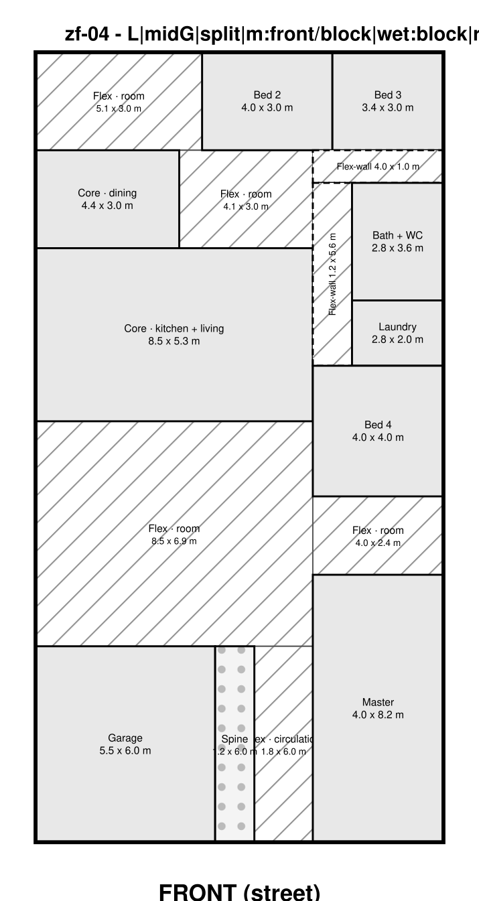
top 4, top 5 and the regression target match
top 4 (rank 35 of 2884) L|midW|split|m:rear/block|wet:block|rr:FM|nofw|v0 score 29.96 · Flex share 29% · circulation 6% · Core 28% · bedroom spread 5.4 m · wet near bed yes · laundry near yes · closeness to the user's layout 35% · spine 6.0 m · extensions 35.8 m² · flex m²: room 74.9 · circulation 10.7 · storage 1.8 · sliver 0.0
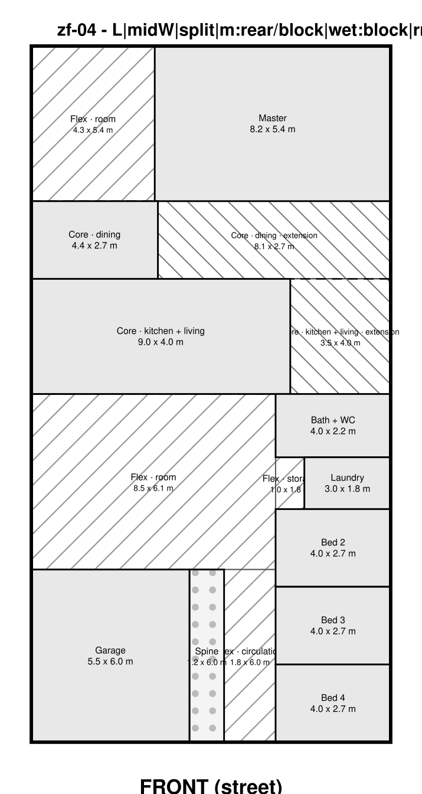
top 5 (rank 37 of 2884) L|midR|split|m:rear/block|wet:split|rr:BBFM|nofw|v2 score 29.98 · Flex share 36% · circulation 5% · Core 19% · bedroom spread 12.6 m · wet near bed yes · laundry near yes · closeness to the user's layout 40% · spine 6.0 m · extensions 0.0 m² · flex m²: room 80.4 · circulation 9.0 · storage 18.5 · sliver 0.0
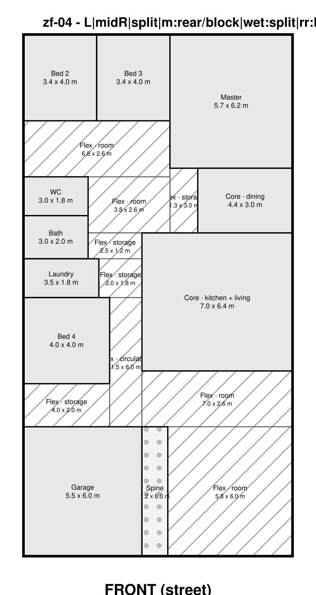
zf-05 - Swanbourne 10890 x 22590 mm, 4 bed, double garage
valid 1758/5504 generated · 1454 distinct · 727 mirror images hidden · top 5 pairwise different: yes (largest same-kind overlap 0.68) blind test NOT passed: best score in the top 5 9.02 vs the user's layout 8.83 (first candidate at least as good: rank none); the user's layout: Flex 17%, circulation 6%, Core 24%; top 1 Flex 28%; closeness top 1 48%, best of all 76% regression target: matched, rank 263 of 1454
top 1 (rank 1 of 1454) L|midR|block|m:middle/block|wet:block|rr:FBB|nofw|v0 score 9.02 · Flex share 28% · circulation 4% · Core 22% · bedroom spread 10.1 m · wet near bed yes · laundry near yes · closeness to the user's layout 48% · spine 6.0 m · extensions 0.0 m² · flex m²: room 62.7 · circulation 2.7 · storage 3.6 · sliver 0.0
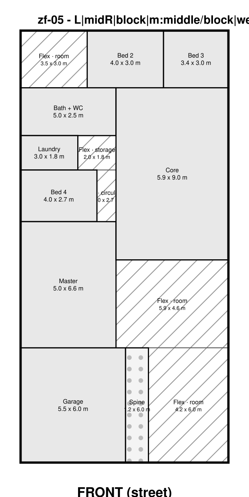
top 2 (rank 7 of 1454) L|midR|split|m:middle/split|wet:block|rr:BBF|fw|v3 score 9.12 · Flex share 29% · circulation 7% · Core 24% · bedroom spread 9.9 m · wet near bed yes · laundry near yes · closeness to the user's layout 62% · spine 6.0 m · extensions 0.0 m² · flex m²: room 49.1 · circulation 3.7 · storage 18.4 · sliver 0.0
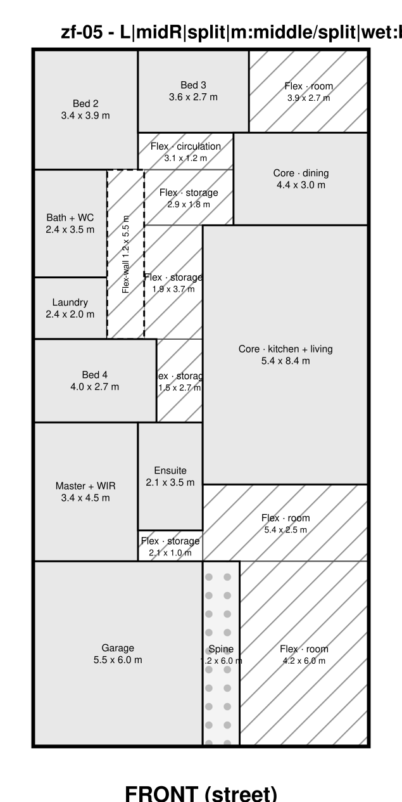
top 3 (rank 23 of 1454) L|midG|split|m:middle/block|wet:block|rr:FBB|fw|v2 score 9.4 · Flex share 27% · circulation 8% · Core 23% · bedroom spread 9.9 m · wet near bed yes · laundry near yes · closeness to the user's layout 33% · spine 6.0 m · extensions 0.0 m² · flex m²: room 56.4 · circulation 2.7 · storage 6.9 · sliver 0.0
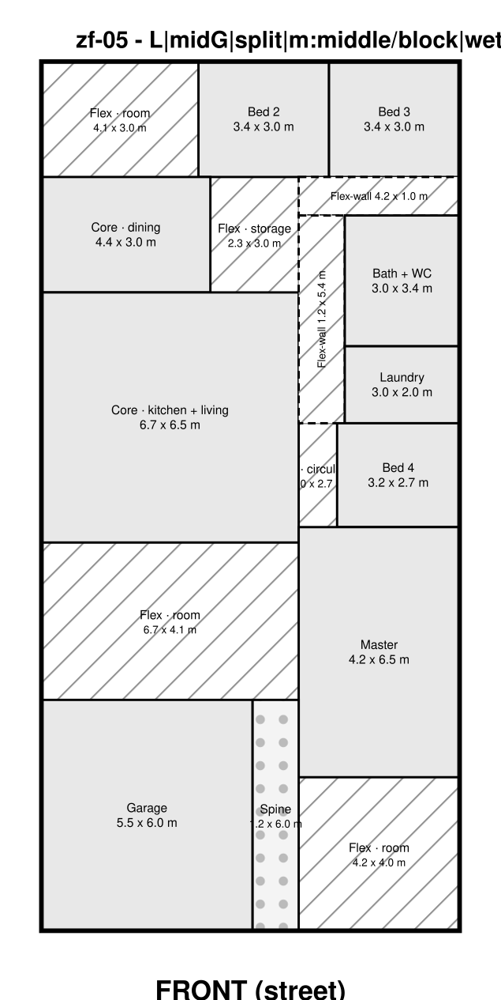
top 4, top 5 and the regression target match
top 4 (rank 177 of 1454) L|midG|block|m:middle/block|wet:split|rr:FBFB|nofw|v1 score 14.92 · Flex share 29% · circulation 5% · Core 20% · bedroom spread 11.7 m · wet near bed yes · laundry near yes · closeness to the user's layout 44% · spine 6.0 m · extensions 0.0 m² · flex m²: room 51.3 · circulation 4.6 · storage 15.1 · sliver 0.0
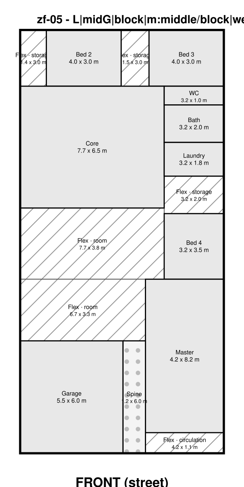
top 5 (rank 179 of 1454) L|midR|split|m:rear/block|wet:split|rr:BBFM|nofw|v0 score 15.21 · Flex share 27% · circulation 3% · Core 20% · bedroom spread 13.0 m · wet near bed yes · laundry near yes · closeness to the user's layout 44% · spine 6.0 m · extensions 0.0 m² · flex m²: room 60.2 · circulation 0.0 · storage 5.5 · sliver 0.0
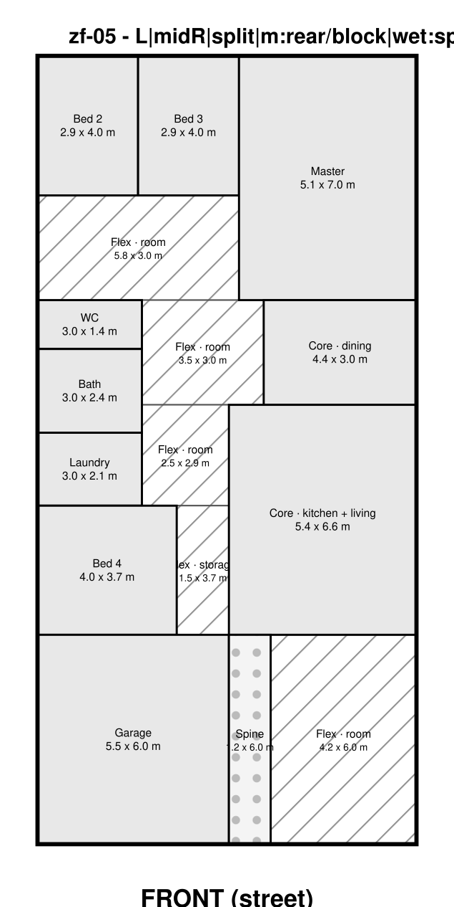
target match (regression) (rank 263 of 1454) TARGET MATCH L|midR|block|m:front/block|wet:split|rr:BBF|fw|v3 score 23.2 · Flex share 29% · circulation 16% · Core 20% · bedroom spread 11.2 m · wet near bed yes · laundry near yes · closeness to the user's layout 69% · spine 6.5 m · extensions 0.0 m² · flex m²: room 44.1 · circulation 24.6 · storage 2.5 · sliver 0.0
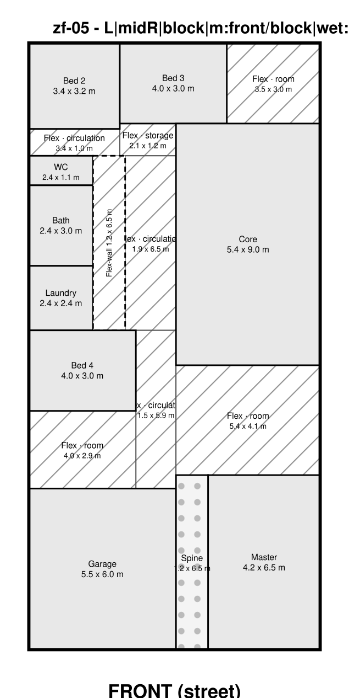
zf-07 - Riesling 11490 x 18290 mm, 4 bed, double garage
valid 1380/5504 generated · 1074 distinct · 537 mirror images hidden · top 5 pairwise different: yes (largest same-kind overlap 0.77) blind test PASSED: best score in the top 5 8.51 vs the user's layout 9.46 (first candidate at least as good: rank 1); the user's layout: Flex 17%, circulation 5%, Core 25%; top 1 Flex 19%; closeness top 1 13%, best of all 75% regression target: matched, rank 272 of 1074
top 1 (rank 1 of 1074) L|midG|split|m:middle/block|wet:block|rr:FBFB|nofw|v0 score 8.51 · Flex share 19% · circulation 5% · Core 26% · bedroom spread 8.8 m · wet near bed yes · laundry near yes · closeness to the user's layout 13% · spine 6.0 m · extensions 0.0 m² · flex m²: room 14.3 · circulation 2.7 · storage 23.3 · sliver 0.0
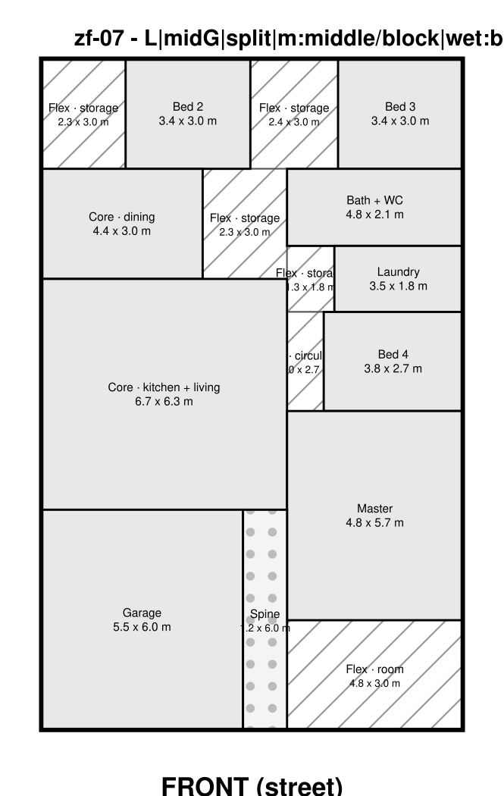
top 2 (rank 3 of 1074) L|midG|split|m:front/block|wet:block|rr:FBB|fw|v2 score 8.75 · Flex share 12% · circulation 10% · Core 26% · bedroom spread 9.7 m · wet near bed yes · laundry near yes · closeness to the user's layout 11% · spine 6.0 m · extensions 0.0 m² · flex m²: room 14.1 · circulation 3.1 · storage 9.0 · sliver 0.0
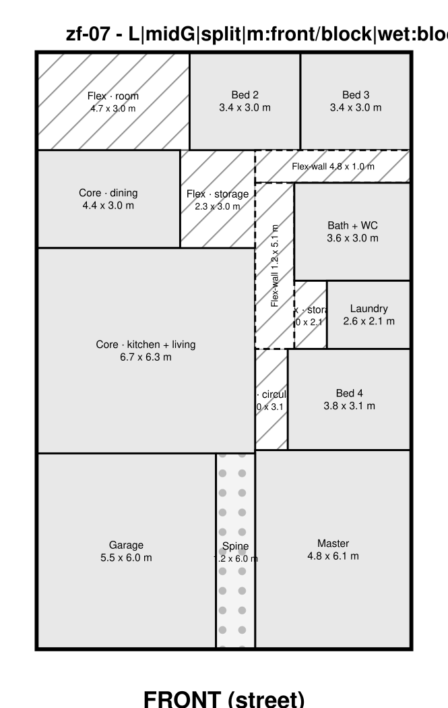
top 3 (rank 7 of 1074) L|midR|split|m:front/block|wet:block|rr:BBF|fw|v0 score 9.02 · Flex share 17% · circulation 7% · Core 24% · bedroom spread 9.9 m · wet near bed yes · laundry near yes · closeness to the user's layout 40% · spine 6.0 m · extensions 0.0 m² · flex m²: room 24.5 · circulation 0.0 · storage 10.9 · sliver 0.0
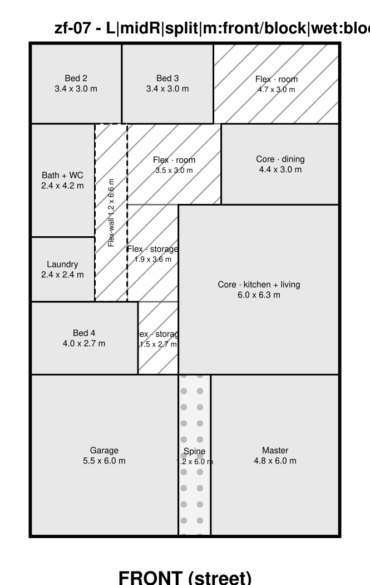
top 4, top 5 and the regression target match
top 4 (rank 27 of 1074) L|midG|split|m:front/block|wet:block|rr:BBF|nofw|v0 score 12.74 · Flex share 19% · circulation 6% · Core 26% · bedroom spread 10.4 m · wet near bed yes · laundry near yes · closeness to the user's layout 23% · spine 6.0 m · extensions 0.0 m² · flex m²: room 25.4 · circulation 5.7 · storage 9.2 · sliver 0.0
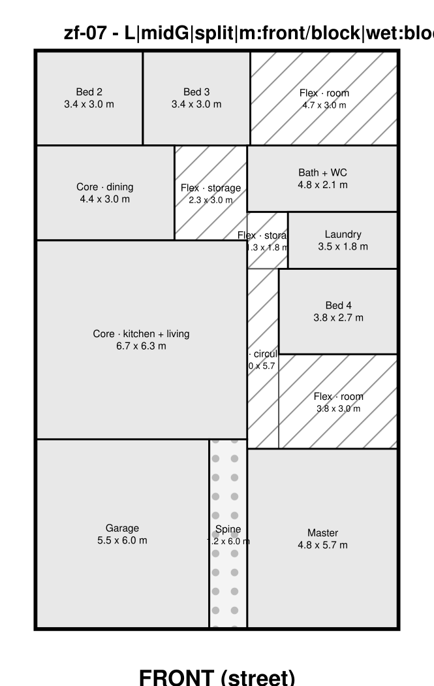
top 5 (rank 33 of 1074) L|midR|split|m:rear/split|wet:split|rr:BBFM|nofw|v0 score 13.82 · Flex share 27% · circulation 6% · Core 19% · bedroom spread 9.3 m · wet near bed yes · laundry near yes · closeness to the user's layout 30% · spine 6.0 m · extensions 0.0 m² · flex m²: room 40.6 · circulation 5.4 · storage 11.3 · sliver 0.0
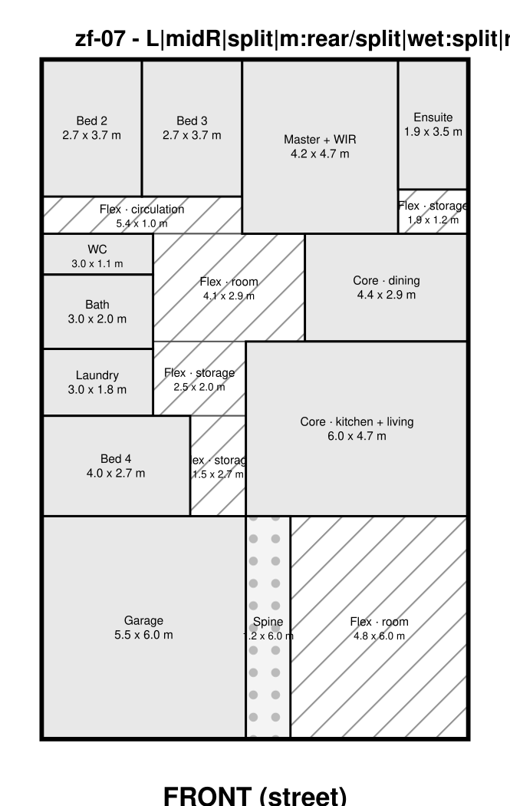
target match (regression) (rank 272 of 1074) TARGET MATCH R|midW|block|m:middle/block|wet:block|rr:FBB|fw|v3 score 42.69 · Flex share 18% · circulation 8% · Core 22% · bedroom spread 15.4 m · wet near bed yes · laundry near yes · closeness to the user's layout 47% · spine 6.0 m · extensions 0.0 m² · flex m²: room 30.0 · circulation 3.5 · storage 5.2 · sliver 0.0
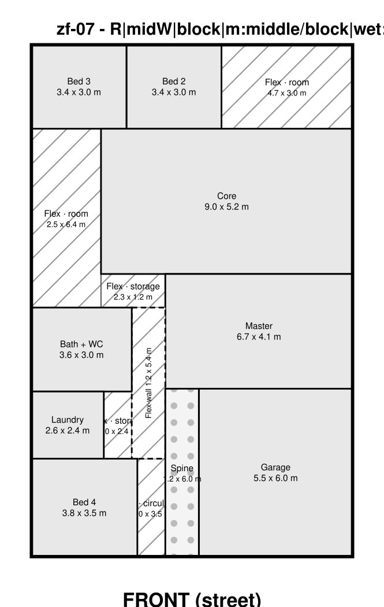
zf-08 - Manly 14990 x 21790 mm, 4 bed, double garage
valid 2814/5504 generated · 2386 distinct · 1193 mirror images hidden · top 5 pairwise different: yes (largest same-kind overlap 0.71) blind test NOT passed: best score in the top 5 32.19 vs the user's layout 10.27 (first candidate at least as good: rank none); the user's layout: Flex 27%, circulation 8%, Core 24%; top 1 Flex 38%; closeness top 1 34%, best of all 66% regression target: matched, rank 35 of 2386 regression altTarget: matched, rank 207 of 2386
top 1 (rank 1 of 2386) L|midR|split|m:front/block|wet:block|rr:BBF|fw|v0 score 32.19 · Flex share 38% · circulation 6% · Core 17% · bedroom spread 10.7 m · wet near bed yes · laundry near yes · closeness to the user's layout 34% · spine 6.0 m · extensions 0.0 m² · flex m²: room 110.4 · circulation 6.0 · storage 8.8 · sliver 0.0
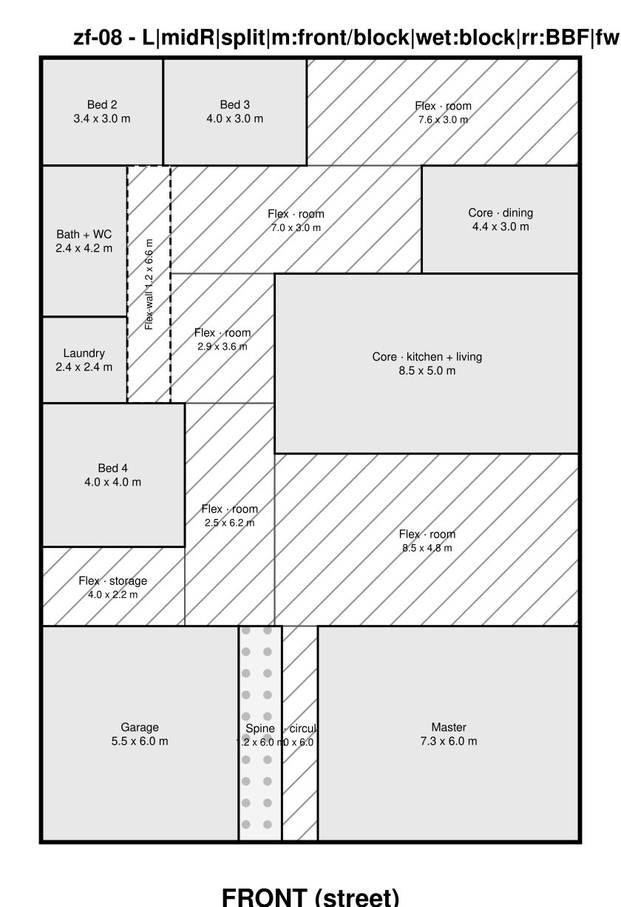
top 2 (rank 9 of 2386) L|midG|split|m:middle/block|wet:block|rr:FBFB|nofw|v0 score 35.09 · Flex share 39% · circulation 6% · Core 18% · bedroom spread 10.4 m · wet near bed yes · laundry near yes · closeness to the user's layout 57% · spine 6.0 m · extensions 0.0 m² · flex m²: room 105.4 · circulation 13.8 · storage 9.8 · sliver 0.0
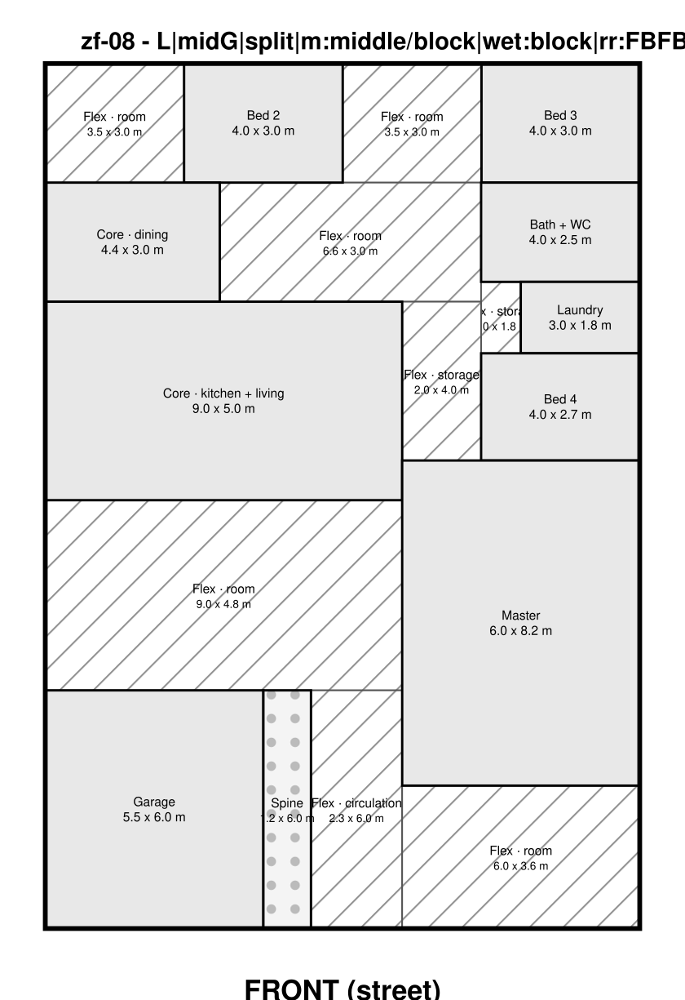
top 3 (rank 15 of 2386) L|rear|block|m:middle/block|wet:split|rr:-|nofw|v2 score 35.41 · Flex share 29% · circulation 2% · Core 30% · bedroom spread 6.6 m · wet near bed yes · laundry near yes · closeness to the user's layout 27% · spine 6.0 m · extensions 38.9 m² · flex m²: room 94.4 · circulation 0.0 · storage 0.0 · sliver 0.0
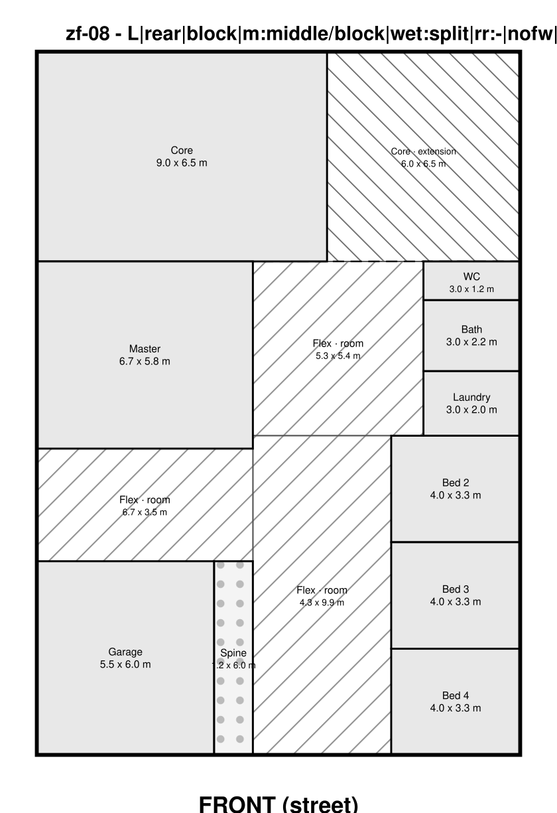
top 4, top 5 and the regression target match
top 4 (rank 23 of 2386) L|midW|block|m:middle/split|wet:split|rr:FBFB|nofw|v0 score 35.48 · Flex share 30% · circulation 5% · Core 30% · bedroom spread 16.6 m · wet near bed yes · laundry near yes · closeness to the user's layout 43% · spine 6.0 m · extensions 38.9 m² · flex m²: room 90.5 · circulation 8.6 · storage 0.0 · sliver 0.0
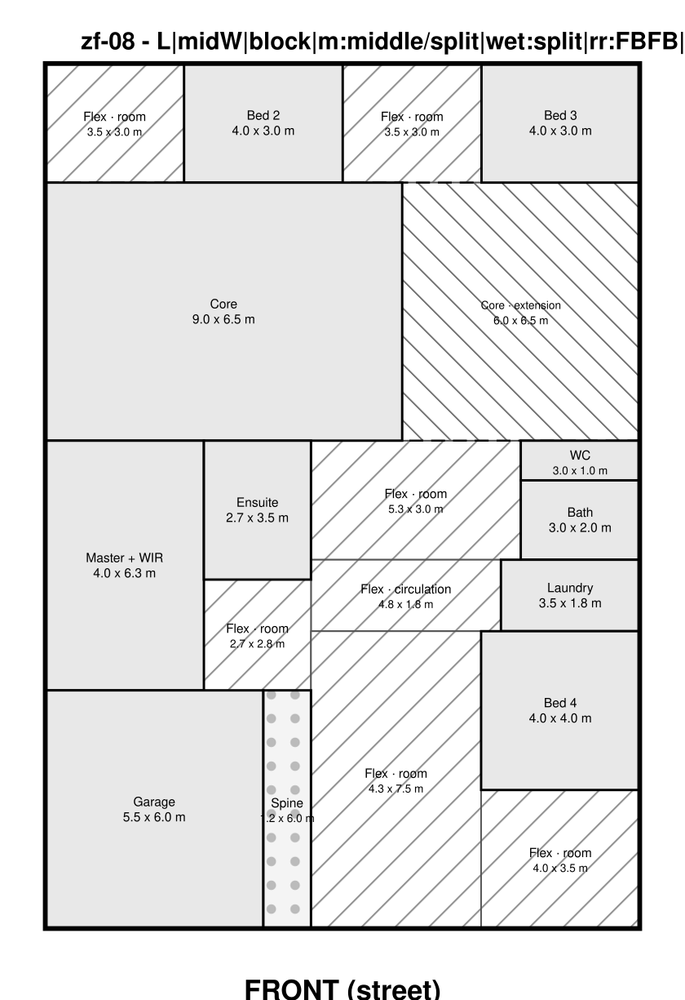
top 5 (rank 31 of 2386) L|midG|block|m:front/block|wet:split|rr:FBFB|nofw|v2 score 37.07 · Flex share 40% · circulation 12% · Core 18% · bedroom spread 12.1 m · wet near bed yes · laundry near yes · closeness to the user's layout 55% · spine 6.0 m · extensions 0.0 m² · flex m²: room 87.2 · circulation 31.7 · storage 12.5 · sliver 0.0
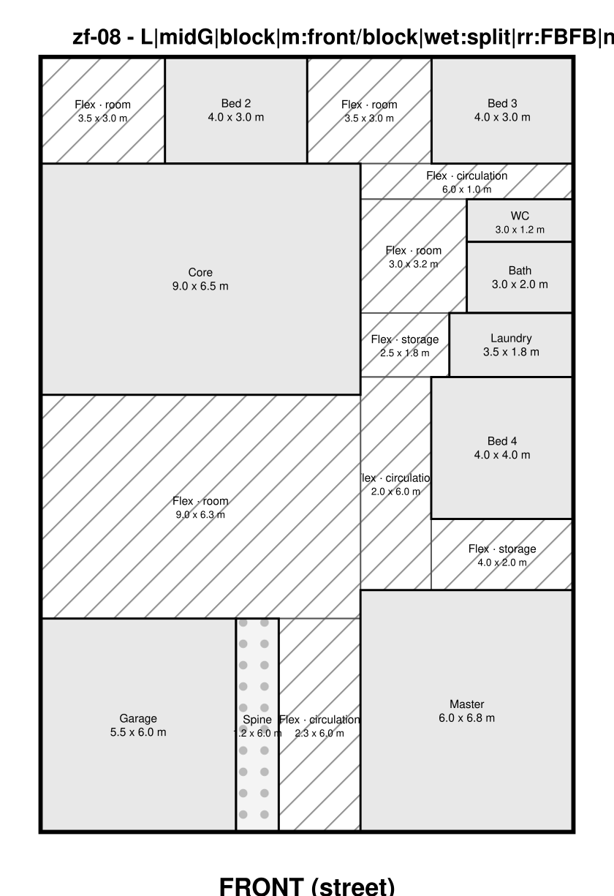
target match (regression) (rank 35 of 2386) TARGET MATCH L|midG|split|m:middle/split|wet:block|rr:FBFB|fw|v2 score 37.91 · Flex share 41% · circulation 12% · Core 18% · bedroom spread 11.4 m · wet near bed yes · laundry near yes · closeness to the user's layout 64% · spine 6.0 m · extensions 0.0 m² · flex m²: room 109.9 · circulation 22.8 · storage 1.8 · sliver 0.0
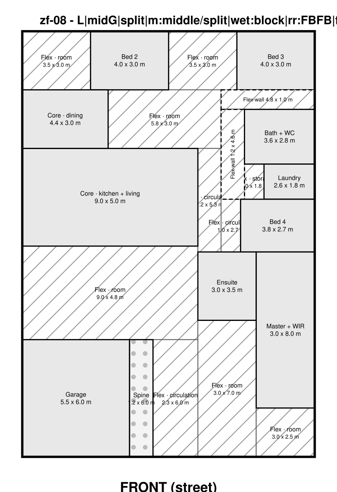
alt-target match (regression) (rank 207 of 2386) ALT TARGET MATCH L|midG|block|m:middle/split|wet:block|rr:FBFB|fw|v2 score 47.89 · Flex share 41% · circulation 13% · Core 18% · bedroom spread 11.4 m · wet near bed yes · laundry near yes · closeness to the user's layout 60% · spine 6.0 m · extensions 0.0 m² · flex m²: room 106.0 · circulation 26.4 · storage 1.8 · sliver 0.0
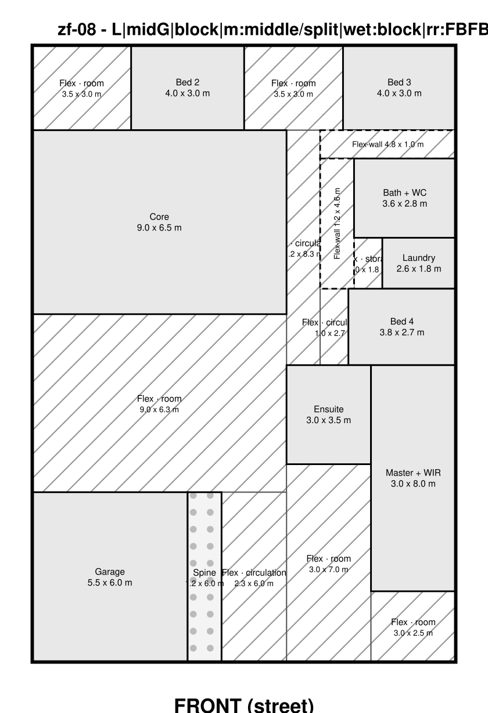
SAMPLE-15x27 - sample 15.0 x 27.0, 4 bed, double garage, WC 15000 x 27000 mm, 4 bed, double garage
valid 3940/5504 generated · 3782 distinct · 1891 mirror images hidden · top 5 pairwise different: yes (largest same-kind overlap 0.69) no layout of the user's for this brief: ranked against the profile of all six plans
builder plan
no builder plan image for this brief
user's zoning drawing
no user zoning drawn for this brief
top 1 (rank 1 of 3782) L|midW|block|m:front/block|wet:block|rr:FBFB|nofw|v0 score 42.26 · Flex share 40% · circulation 4% · Core 24% · bedroom spread 16.1 m · wet near bed yes · laundry near yes · spine 6.0 m · extensions 39.0 m² · flex m²: room 148.8 · circulation 11.0 · storage 3.4 · sliver 0.0
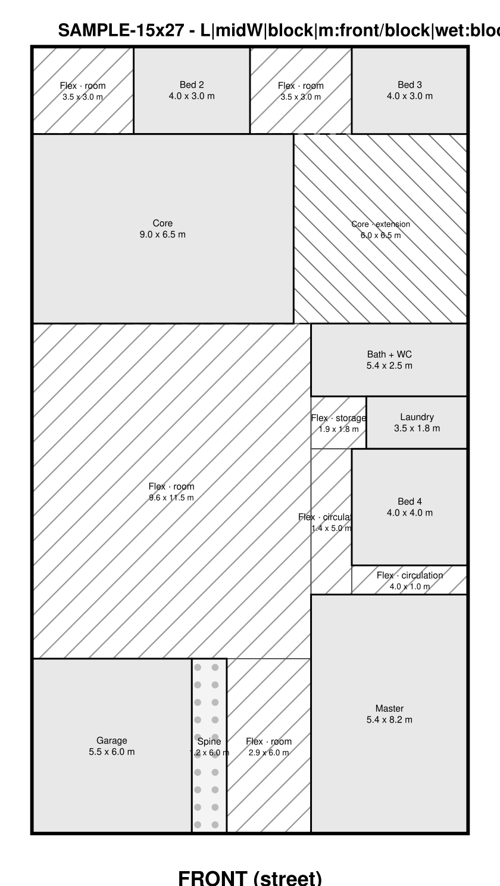
top 2 (rank 3 of 3782) L|midG|split|m:middle/block|wet:block|rr:FBFB|fw|v0 score 44.3 · Flex share 49% · circulation 9% · Core 14% · bedroom spread 11.3 m · wet near bed yes · laundry near yes · spine 6.0 m · extensions 0.0 m² · flex m²: room 175.8 · circulation 24.4 · storage 0.0 · sliver 0.0
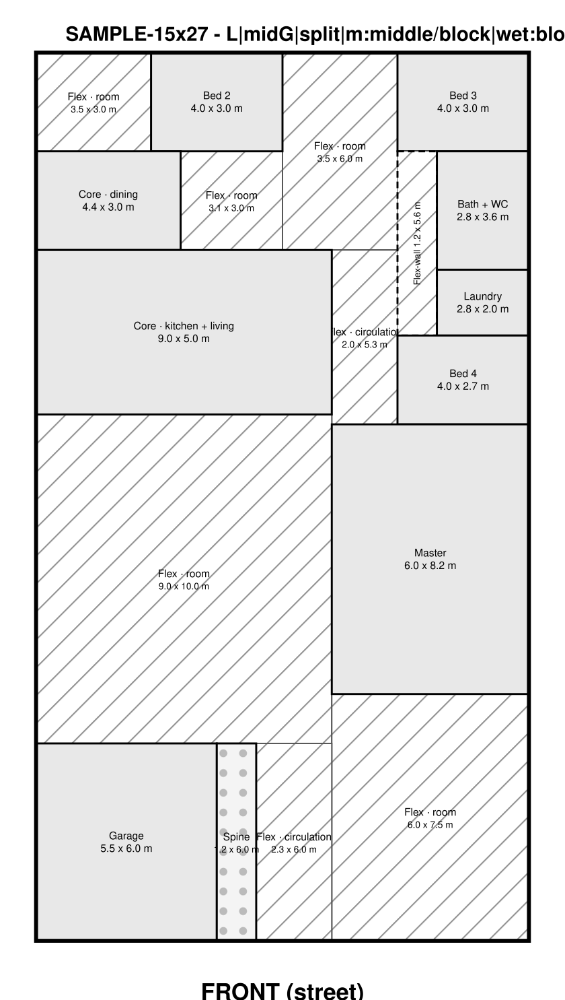
top 3 (rank 7 of 3782) L|midR|split|m:middle/block|wet:block|rr:BBF|fw|v3 score 44.32 · Flex share 50% · circulation 5% · Core 14% · bedroom spread 11.5 m · wet near bed yes · laundry near yes · spine 6.0 m · extensions 0.0 m² · flex m²: room 184.4 · circulation 5.0 · storage 12.6 · sliver 0.0
top 4, top 5 and the regression target match
top 4 (rank 23 of 3782) L|midW|split|m:rear/block|wet:block|rr:FM|fw|v2 score 48.1 · Flex share 39% · circulation 4% · Core 25% · bedroom spread 5.4 m · wet near bed yes · laundry near yes · spine 6.0 m · extensions 53.7 m² · flex m²: room 158.5 · circulation 0.0 · storage 0.0 · sliver 0.0top 5 (rank 39 of 3782) L|midR|block|m:front/block|wet:split|rr:BBF|fw|v0 score 50.33 · Flex share 50% · circulation 5% · Core 14% · bedroom spread 10.6 m · wet near bed yes · laundry near yes · spine 6.0 m · extensions 0.0 m² · flex m²: room 194.9 · circulation 6.0 · storage 0.0 · sliver 0.0
custom-8800x20550 - 8.8 x 20.55, Master + 3 bed, double garage 8800 x 20550 mm, 4 bed, double garage
valid 16/48 generated · 12 distinct · 6 mirror images hidden · top 5 pairwise different: yes (largest same-kind overlap 0.00) no layout of the user's for this brief: ranked against the profile of all six plans
builder plan
no builder plan image for this brief
user's zoning drawing
no user zoning drawn for this brief
top 1 (rank 1 of 12) L|midG|block|m:middle/split|wet:block|rr:BBB|fw|v2 score 24.53 · Flex share 12% · circulation 9% · Core 20% · bedroom spread 5.8 m · wet near bed no · laundry near yes · spine 6.0 m · extensions 0.0 m² · flex m²: room 0.0 · circulation 0.0 · storage 22.5 · sliver 0.0